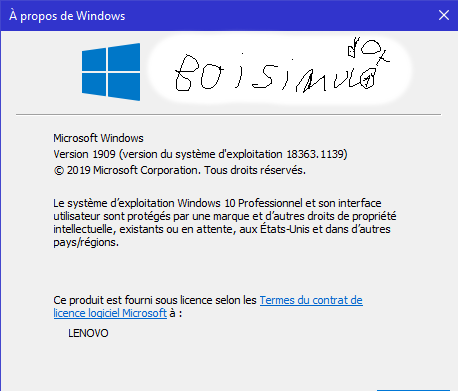
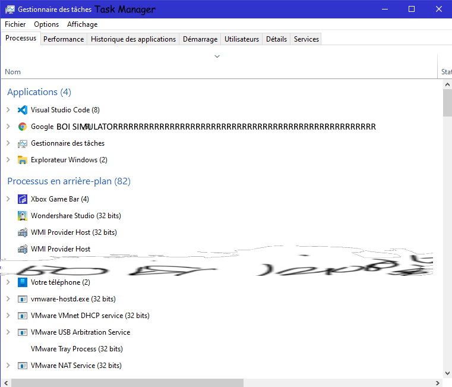

BOI SIMULATOR OPENS THE "WINVER.EXE" AND THE TASK MANAGER?!!!???!!!!?!?!!???!!!!
 
BOI SIMULATOR OPENS CMD AND CMD AND CMD AND CMD AND CMD AND CMD AND CMD AND CMD AND CMD AND CMD AND CMD AND CMD AND CMD AND CMD AND CMD AND CMD AND CMD AND CMD AND CMD AND CMD AND CMD AND CMD AND CMD AND CMD AND CMD AND CMD AND CMD AND CMD AND CMD AND CMD AND CMD AND CMD AND CMD AND CMD AND CMD AND CMD AND CMD AND CMD AND CMD AND CMD AND CMD AND CMD AND CMD AND CMD AND CMD AND CMD AND CMD AND CMD AND CMD AND CMD AND CMD AND CMD AND CMD AND CMD AND CMD AND CMD AND CMD AND CMD AND CMD AND CMD AND CMD AND CMD AND CMD AND CMD AND CMD AND CMD AND CMD AND CMD AND CMD AND CMD AND CMD AND CMD AND CMD AND CMD AND CMD AND CMD AND CMD AND CMD AND CMD AND CMD AND CMD AND CMD AND CMD AND CMD AND CMD AND CMD AND CMD AND CMD AND CMD AND CMD AND CMD AND CMD AND CMD AND CMD AND CMD AND CMD AND CMD AND CMD AND CMD AND CMD AND CMD AND CMD AND CMD AND CMD AND CMD AND CMD AND CMD AND CMD AND CMD AND CMD AND CMD AND CMD AND CMD AND CMD AND CMD AND CMD AND CMD AND CMD AND CMD AND CMD AND CMD AND CMD AND CMD AND CMD AND CMD AND CMD AND CMD AND CMD AND CMD AND CMD?!!!???!!!!?!?!!???!!!!